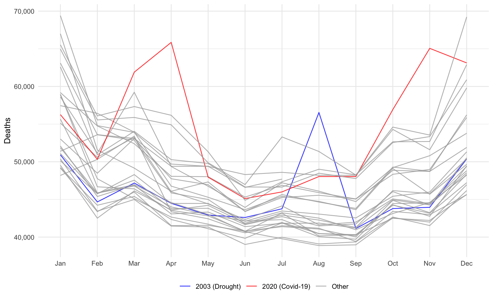
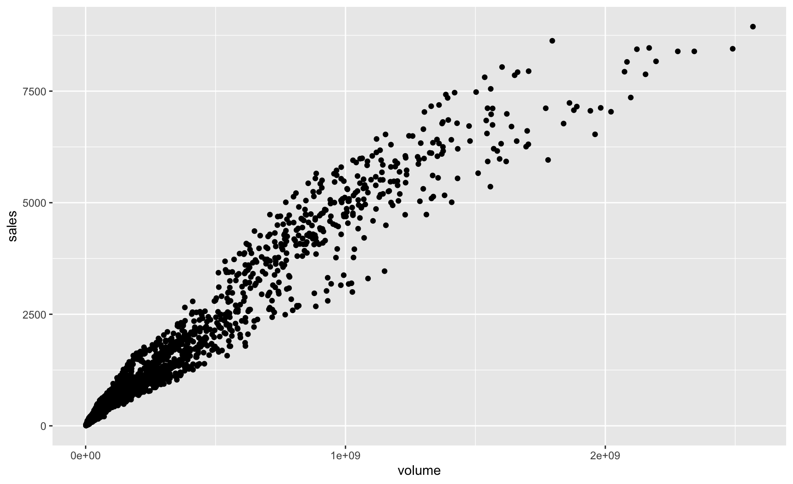
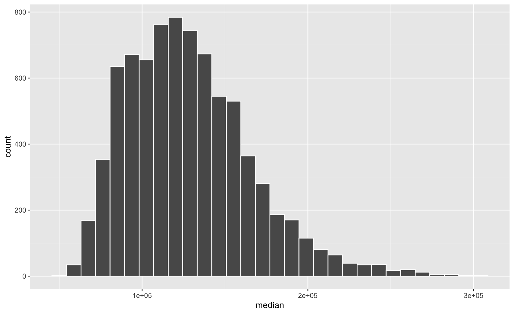
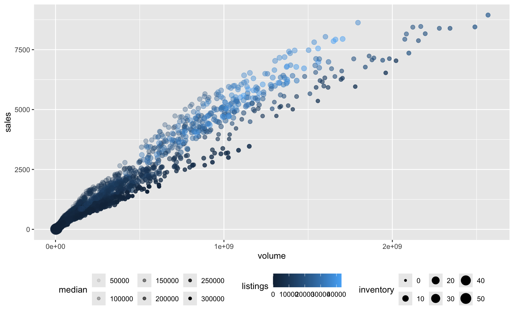
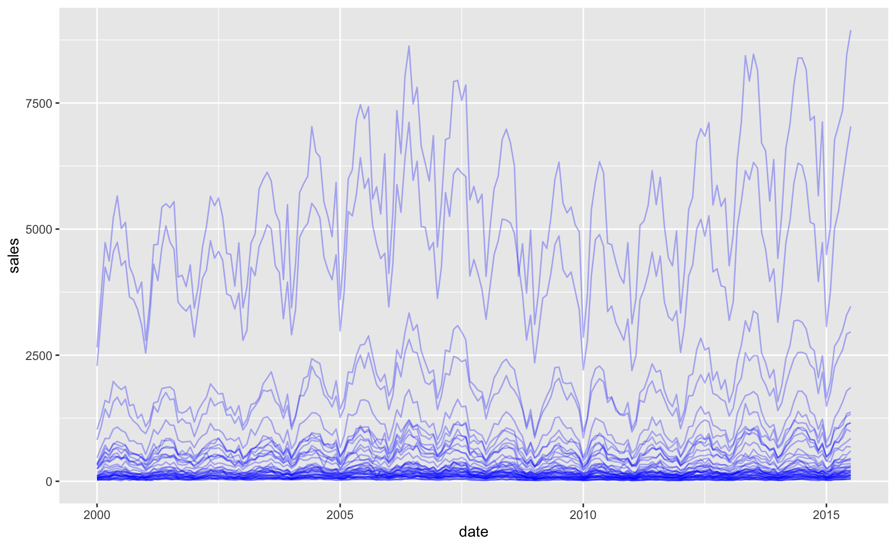
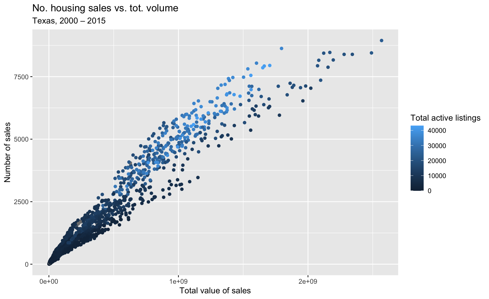
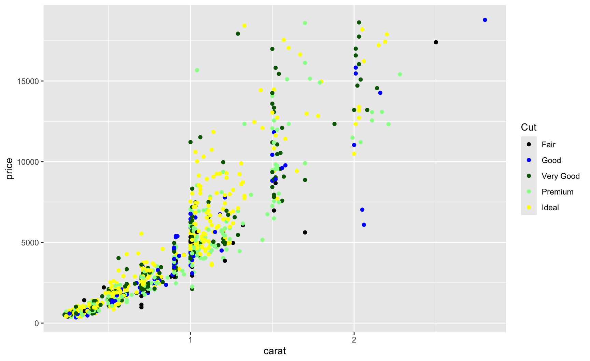

Introduction to programming for data analysis
Session 3 — Data Visualization
Disclaimer
The slides were adapted from those of Pierre Michel and Morgan Raux, both researchers at AMSE, who kindly shared their work.
This slide deck was made with Quarto and reveal.js, it is translated by Claude Sonnet 5 from a LaTex presentation previously made with beamer.
The 4 steps in any data analysis
- Finding data
- Cleaning data to combine several data sources
- Producing knowledge out from data (summary statistics, regression analysis summarised via tables and graphs)
- Interpreting the results (writing)
Example of a graph made with R

Monthly number of deaths in France (2020–2025). Source: Insee (ref.: 000436394). (R Codes)
A grammar of graphics
Visualization with {ggplot2}
- There are multiple packages to produce graphs in
R.- The
{base}and{ggplot2}packages offer plot functions I rely on the most.
- The
- Here, we will introduce only functions from
{ggplot2}. - With this package, plots are created following a “grammar of graphics” and are constructed by adding layers to one another.
- The (awesome) official documentation: https://ggplot2.tidyverse.org/reference/
Disclaimer The slides are strongly inspired by the 🌐 introduction provided by de Bruin (2024).
What is a grammar of graphics?
- A grammar of a language defines the rules of structuring words and phrases into meaningful expressions.
- Similarly, a grammar of graphics defines the rules of structuring mathematical and aesthetic elements into a meaningful graph.
- Wilkinson (2005) designed the grammar upon which
{ggplot2}is based. - To learn with a book: Wickham (2016).
The main elements in a ggplot2 graph
- Data: variables mapped to aesthetic features of the graph.
- Geoms: objects/shapes on the graph.
- Stats: statistical transformations that summarize data (e.g. mean, confidence intervals).
- Scales: mappings of aesthetic values to data values. Legends and axes visualize scales.
- Coordinate systems: the plane on which data are mapped on the graphic.
- Faceting: splitting the data into subsets to create multiple variations of the same graph.
The base layer
- The base layer of a
{ggplot2}graph is created with theggplot()function. - We need to specify two arguments:
data: the datasetmapping: a set of aesthetic mappings between variables in the data and visual properties
- Then, we need to provide at least one layer which describes how to render each observation (usually created with a
geomfunction).
Our first graph with {ggplot2}

Aesthetics
Geom layers and overriding aesthetics (1/2)
- The layers inherit aesthetics from
ggplot(). - If provided, new aesthetics will override those inherited from
ggplot().
ggplot(
data = txhousing,
mapping = aes(x = volume, y = sales)
) +
geom_point(mapping = aes(colour = listings))colour = listingscauses the colour of objects to vary with values of the variablelistings.
Geom layers and overriding aesthetics (2/2)
Aesthetic attributes
- Multiple attributes are available, depending on the geom used, the most common are:
x,y: positioning along x-axis and y-axis, resp.,colour: colour of objects,fill: fill colour of objects (name or hexadecimal code),linetype: how lines should be drawn (solid, dashed, dotted, …),shape: shape of markers,size: area of markers (for points), font size (for text),linesize: thickness of the lines,alpha: transparency (between 0 (transparent) and 1 (opaque)).
Geoms and aesthetics
- Each geom has its required aesthetics.
- E.g.,
geom_point()requires bothxandy.
- E.g.,
- Some aesthetics are not possible for some geoms.
- E.g., while the
shapeaesthetic is used bygeom_point(), it is not accepted by thegeom_bar()function.
- E.g., while the
- Check the help pages or the online documentation, or even the 🎨 gallery.
Usual visualizations
Histogram
A continuous variable (here: median) is cut into bins (default to 30). The number of observations (count) in each bin is reported.

Density plot
Bar plot
Scatter plot
Useful to represent covariation between two continuous variables.

Line plot
Useful to represent covariation between a continuous variable (y-axis) and an ordered variable (x-axis).

Labels
Labels
The labs() function allows to change axis, legend, and plot labels.

Exporting Graphs
The ggsave() function
- The
ggsave()function saves the last displayed plot (or a specific ggplot object if provided as argument). - It supports many formats: PNG (good for presentations and web), PDF (for print and publications, i.e., your reports), JPEG, TIFF, SVG, EPS.
- Unless specified, in RStudio, the plot size and resolution of the ‘Plots’ tab is used (in inches).
Output quality
- When exporting a scatterplot, if the number of points is large, producing a PDF might not be a good idea: the file will be huge.
- To export a plot in PNG with a good resolution, the number of dots per inch (DPI) can be specified.
Scales
- Every aesthetic (colour, size, shape, x/y position, etc.) has a corresponding scale function.
- Default scales are chosen automatically, but can be customized with a
scale_*function. - The type of scale depends on the data type of the variable:
- Continuous variables: gradients, continuous axes, size scales,
- Discrete variables: categorical palettes, shapes, breaks.
Scales with a numeric variable
Scales with a discrete variable

cut variable is discrete.Facetting
Facetting
- Facetting corresponds to creating small subplots for subsets of data.
- Each panel shows the same plot for a different level of a variable.
- It makes it easier to compare patterns across groups.
- There are two main functions:
facet_wrap(): 1D wrapping of panels,facet_grid(): 2D grid of panels.
Facetting with facet_wrap()
Facetting with facet_grid()
To go further
- This presentation only showed a glimpse of what
ggplot2has to offer. - To go further: 🌐 https://ggplot2-book.org/
Exercises
Practice with the second tutorial!
Appendix
References
Codes for the graph showing the number of deaths in France (1/3)
Codes for the graph showing the number of deaths in France (2/3)
Codes for the graph showing the number of deaths in France (3/3)
p_deaths <- ggplot(
data = data_plot_deaths,
mapping = aes(x = month, y = deaths, group = year, colour = year_excess)
) +
geom_line(alpha = .8) +
scale_colour_manual(
NULL, values = c(
"2003 (Drought)" = "blue", "2020 (Covid-19)" = "red",
"Other" = "darkgray"
)) +
labs(x = NULL, y = "Deaths") +
scale_y_continuous(
labels = scales::label_number(suffix = "", scale = 1, big.mark = ",")
) + theme_minimal() + theme(legend.position = "bottom")
Introduction to programming for data analysis — Session 3